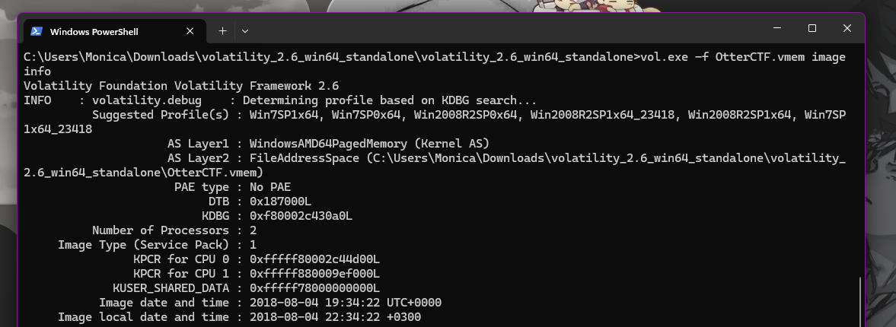
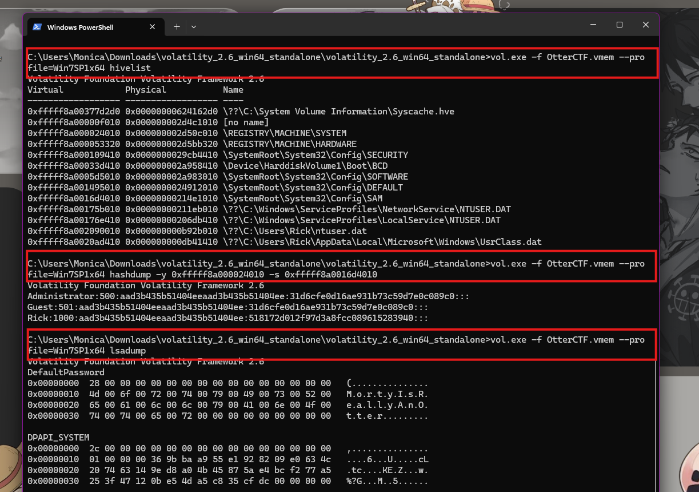
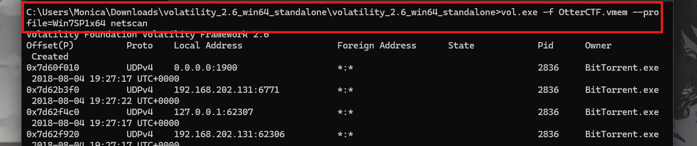
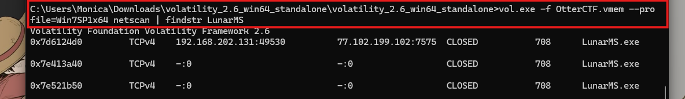
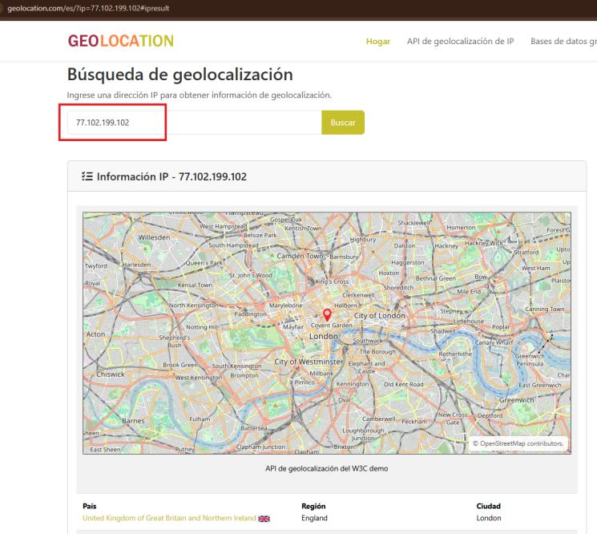
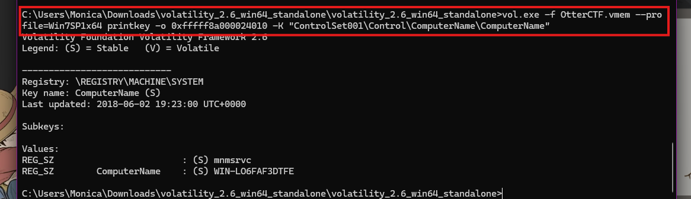
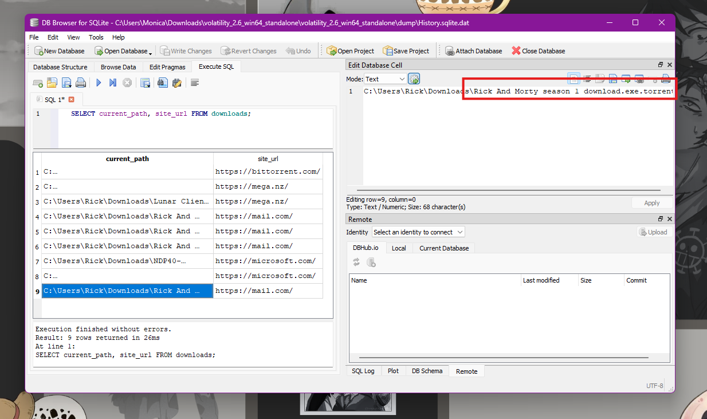
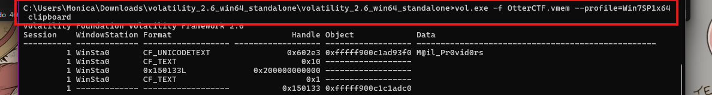
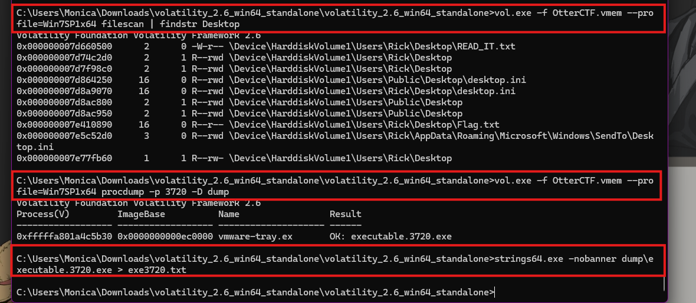
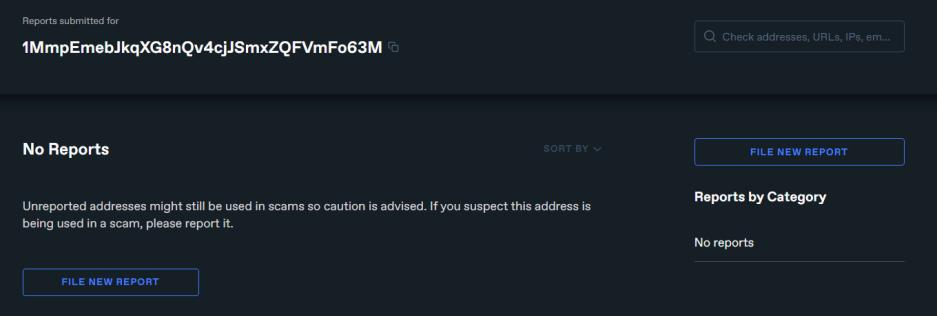

La memoria del crimen
Análisis forense de memoria volátil con Volatility: el caso OtterCTF
Introducción
Elementos de la FGM especializada obtuvieron el volcado de memoria RAM (OtterCTF.vmem, 2 GB) del equipo de un presunto cibercriminal, vinculado a trasiego de estupefacientes y rapto. El objetivo fue analizar ese volcado con Volatility 2.6 para confirmar o descartar varias pistas de inteligencia: el alias "Morty", el usuario "Ricky", unas iniciales entregadas por SEDENE y CNDI, y el uso de servidores Lunar, correos y Torrent para contactar víctimas.
Objetivo
Realizar un análisis forense de memoria volátil sobre el volcado OtterCTF.vmem con Volatility, para identificar al usuario del equipo, su contraseña, su dirección IP, los procesos relevantes que ejecutó y la infraestructura (servidor, correos, cartera de criptomoneda) que usaba para operar, contrastando cada hallazgo contra las hipótesis del caso.


El desfase UTC+3 no prueba la ubicación física del sospechoso, pero orienta la investigación hacia Israel, Rusia occidental o Turquía, y sirve para convertir el resto de las marcas de tiempo del caso.
Perfil del equipo y contraseña
imageinfo ubicó el perfil Win7SP1x64 (Windows 7 SP1, 64 bits).
Con hivelist se localizaron las colmenas del registro, y hashdump +
lsadump recuperaron las cuentas del sistema: Administrator, Guest y
el perfil en uso, Rick. El secreto DefaultPassword de LSA reveló la
contraseña en texto claro.


La contraseña MortyIsReallyAnOtter contiene el alias "Morty" reportado por inteligencia, vinculando directamente este equipo con la persona investigada.
Red: IP local y servidor remoto
netscan recorrió la memoria en busca de conexiones activas. En Local Address
se repite 192.168.202.131, la IP privada del equipo al momento del ataque
(evidencia EV455FGM). Filtrando por el proceso del juego LunarMS.exe apareció además la
conexión al servidor remoto.






Nombre del equipo
printkey leyó la llave ComputerName de la colmena SYSTEM.


Dentro del nombre WIN-LO6FAF3DTFE aparecen las iniciales FAF3 (SEDENE) y TFE (CNDI), lo que sugiere que ambas pistas apuntan al mismo equipo.
Procesos y cronología del ataque
pslist/pstree mostraron tres procesos clave: LunarMS.exe
(cliente del servidor Lunar del juego MapleStory), BitTorrent.exe (el canal
usado para enviar videos a las víctimas) y, el más relevante, "Rick And Morty season 1
download.exe", que siete segundos después lanzó vmware-tray.exe desde
una carpeta temporal: un capítulo de serie que en realidad era el ransomware.
| Hora (UTC / local) | Evento |
|---|---|
| 19:27:07 (22:27) | Se inicia BitTorrent.exe |
| 19:27:39 (22:27) | LunarMS.exe se conecta a 77.102.199.102:7575 |
| 19:29:30 (22:29) | Se abre Chrome: acceso al correo en mail.com |
| 19:32:55 (22:32) | Se ejecuta "Rick And Morty season 1 download.exe" |
| 19:33:02 (22:33) | Se lanza el ransomware vmware-tray.exe |
| 19:34:22 (22:34) | Captura del volcado de memoria |
Correos y credenciales
El historial de Chrome (extraído con filescan y dumpfiles) mostró que el
archivo .torrent de "Rick And Morty" se descargó desde mail.com.


Al buscar "@mail.com" en las cadenas del volcado aparecieron las cuentas
rickopicko@mail.com y rickypinky@mail.com (coincide con "Ricky",
el usuario que pedía pagos en BTC en Telegram), además del texto
Hum@n_I5_Th3_Weak3s7_Link_In_Th3_Ch@in. El plugin clipboard recuperó además
la contraseña que el usuario copiaba para entrar a su correo (evidencia EV456FGM).


Ransomware y cartera de rescate
En el escritorio de Rick aparecieron la nota de rescate READ_IT.txt y el archivo
cifrado Flag.txt. procdump reconstruyó el ejecutable del proceso
3720 y, al filtrar sus cadenas con el formato de una dirección Bitcoin, apareció la cartera del
rescate.


La cartera 1MmpEmebJkqXG8nQv4cjJSmxZQFVmFo63M corresponde al ransomware $ucyLocker (variante de Hidden Tear), que exige 0.16 BTC. No tiene reportes en Chainabuse, pero eso no la hace legítima: sitios de análisis de malware la documentan como indicador de compromiso.


Contraste de hipótesis
| Hipótesis | Evidencia en memoria | Valoración |
|---|---|---|
| Alias "Morty" | Contraseña MortyIsReallyAnOtter | Confirmada |
| Iniciales FAF3 y TFE | Nombre del equipo WIN-LO6FAF3DTFE | Confirmada |
| Servidores Lunar | LunarMS.exe → 77.102.199.102:7575 (Londres) | Confirmada |
| EV455FGM (IP y SO) | 192.168.202.131 · Windows 7 SP1 x64 | Confirmada |
| EV456FGM (contraseña y correos) | M@il_Pr0vid0rs · rickopicko / rickypinky | Confirmada |
| Servicios Torrent | BitTorrent.exe, carpeta C:\Torrents | Confirmada |
| "Ricky" y grupo S0_Just_M0v3_Socy | rickypinky@mail.com · cartera BTC | Parcial |
| Víctima GTH | Sin coincidencias en lo analizado | Pendiente |
También debe considerarse una hipótesis alternativa: el equipo fue infectado por un ransomware que llegó por un torrent descargado desde el correo menos de dos minutos antes de la captura, lo que podría indicar que el sujeto es a la vez operador y víctima. La memoria demuestra qué ocurrió en el equipo, pero no quién estaba frente a él.
Aprendizajes obtenidos
- Aprendí a usar Volatility para extraer, a partir de un solo volcado de RAM, información que nunca se escribe en disco: contraseñas en texto claro, el contenido del portapapeles y conexiones de red activas.
- Reforcé que cada hallazgo debe corroborarse con una segunda fuente (por ejemplo, el historial de Chrome y las cadenas del correo), porque las búsquedas con Strings pueden dar falsos positivos.
- Comprendí que la memoria es una fotografía de un solo instante y no prueba quién operaba el equipo, por lo que siempre hace falta correlacionarla con otras fuentes para atribuir los hechos a una persona.
Conclusión
El análisis de memoria volátil con Volatility permitió responder casi todas las hipótesis del caso a partir de un solo volcado de RAM: el equipo WIN-LO6FAF3DTFE, con Windows 7 SP1 y la IP 192.168.202.131, pertenece al perfil protegido con la contraseña MortyIsReallyAnOtter; desde él se usaban el servidor Lunar, BitTorrent y los correos de "Ricky", y en él se ejecutó un ransomware que exige el pago a una cartera de Bitcoin. Ante un equipo encendido, capturar la RAM antes de apagarlo es un paso indispensable de la investigación de cibercrimen.